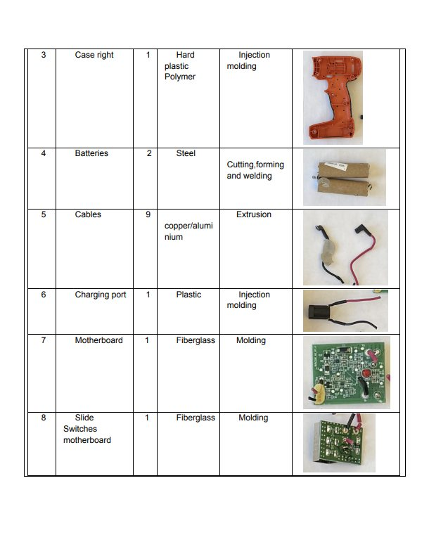
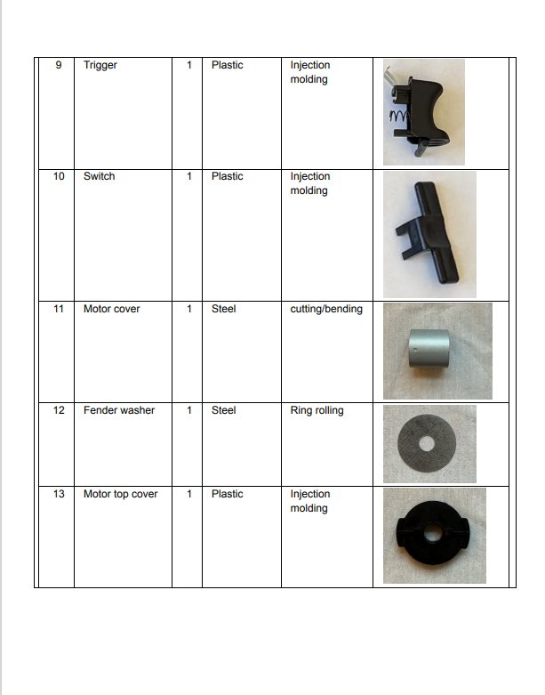
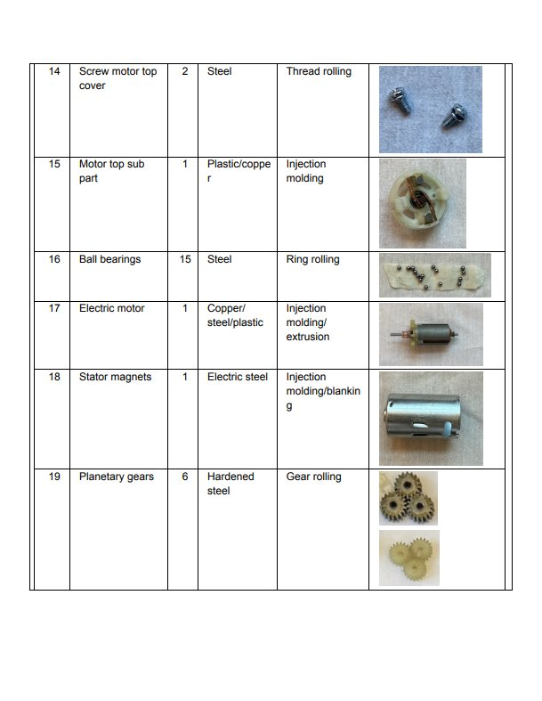
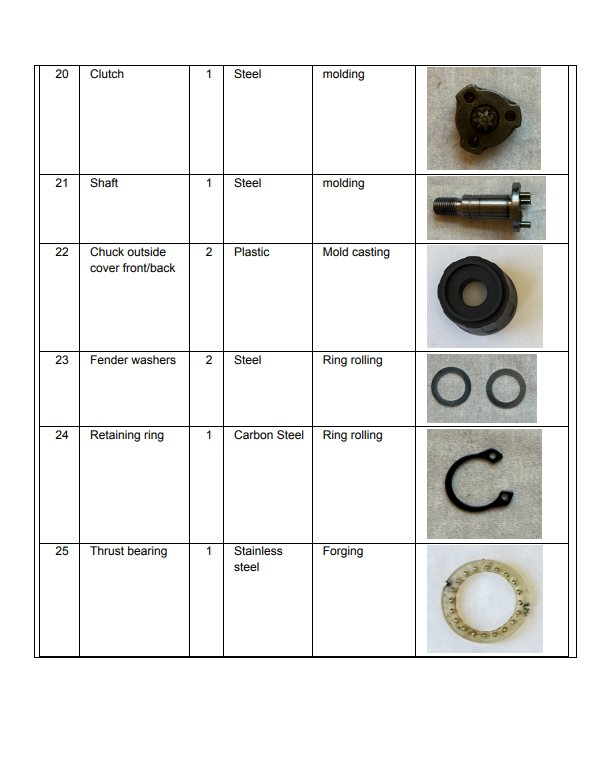
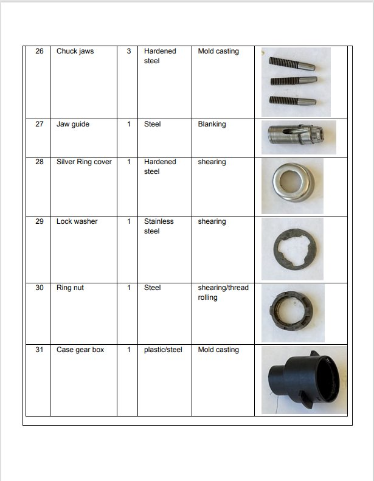
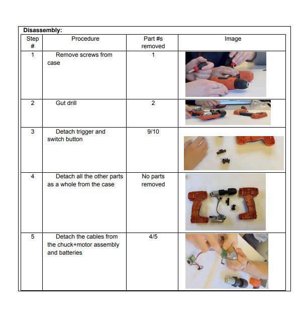
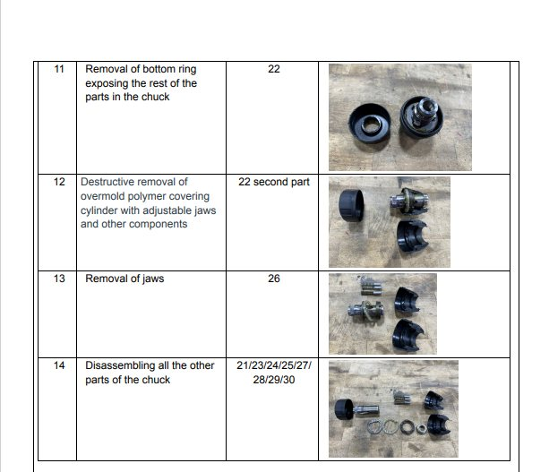
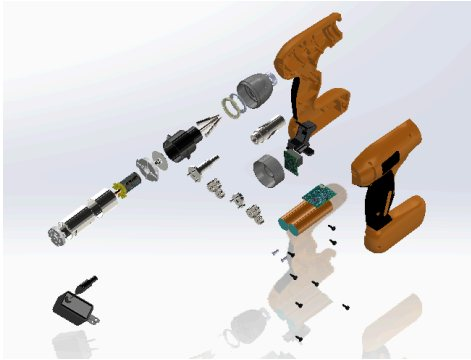

User design analysis
In order to understand the product's design at a basic level and inform decomposition, the following steps were completed:
- External Product Review
- Observation of first-use
- Off-nominal use analysis
- Concept of Operations
These steps allowed my team to analyze how first-time users may approach the product, what affordances the designers incorporated, and begin considering the mechanics of the device.
Decomposition table
A decomposition table was utilized in order to track the pieces and in what order they were removed. The full document can be found here. After decomposition, the pieces were sorted into subsystems including the gear box, electrical components, and needle arm. Using the decomposition table and photos of the decomposition process, a function structure diagram was created.
Modeling
We identified what components were fundamental to the functioning of the drill, and chose to omit smaller standard components such as screws. After the individual parts were modeled, the assembly was completed collaboratively, using the decomposition table for reference.
Reflection
The process of modeling the drill reinforced the importance of doing a detailed study and careful decomposition. Because we had thoroughly documented the tear-down, modeling the pieces in an accurate manner was simplified. This project gave me a greater appreciation for attention to detail when modeling parts. Because subsystems were modeled individually, some parts had to be modified in order for the final assembly to mate properly. I enjoyed the challenge of this project and am proud of the final product.
Gallery








